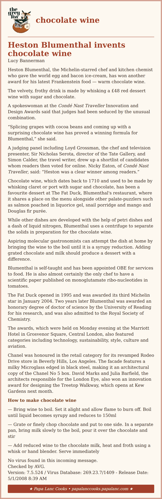

WELCOME
Lucy Bannerman
Heston Blumenthal, the Michelin-starred chef and kitchen chemist who gave the world egg and bacon ice-cream, has won another award for his latest Frankenstein food — warm chocolate wine.
The velvety, frothy drink is made by whisking a £48 red dessert wine with sugar and chocolate.
A spokeswoman at the Condé Nast Traveller Innovation and Design Awards said that judges had been seduced by the unusual combination.
“Splicing grapes with cocoa beans and coming up with a surprising chocolate wine has proved a winning formula for Blumenthal,” she said.
A judging panel including Loyd Grossman, the chef and television presenter, Sir Nicholas Serota, director of the Tate Gallery, and Simon Calder, the travel writer, drew up a shortlist of candidates whom readers then voted for online. Nicky Eaton, of Condé Nast Traveller, said: “Heston was a clear winner among readers.”
Chocolate wine, which dates back to 1710 and used to be made by whisking claret or port with sugar and chocolate, has been a favourite dessert at The Fat Duck, Blumenthal's restaurant, where it shares a place on the menu alongside other palate-puzzlers such as salmon poached in liquorice gel, snail porridge and mango and Douglas fir purée.
While other dishes are developed with the help of petri dishes and a dash of liquid nitrogen, Blumenthal uses a centrifuge to separate the solids in preparation for the chocolate wine.
Aspiring molecular gastronomists can attempt the dish at home by bringing the wine to the boil until it is a syrupy reduction. Adding grated chocolate and milk should produce a dessert with a difference.
Blumenthal is self-taught and has been appointed OBE for services to food. He is also almost certainly the only chef to have a scientific paper published on monoglutamate ribo-nucleotides in tomatoes.
The Fat Duck opened in 1995 and was awarded its third Michelin star in January 2004. Two years later Blumenthal was awarded an honorary degree of doctor of science by the University of Reading for his research, and was also admitted to the Royal Society of Chemistry.
The awards, which were held on Monday evening at the Marriott Hotel in Grosvenor Square, Central London, also featured categories including technology, sustainability, style, culture and aviation.
Chanel was honoured in the retail category for its revamped Rodeo Drive store in Beverly Hills, Los Angeles. The facade features a milky Microglass edged in black steel, making it an architectural copy of the Chanel No 5 box. David Marks and Julia Barfield, the architects responsible for the London Eye, also won an innovation award for designing the Treetop Walkway, which opens at Kew Gardens next month.
How to make chocolate wine
— Bring wine to boil. Set it alight and allow flame to burn off. Boil until liquid becomes syrupy and reduces to 150ml
— Grate or finely chop chocolate and put to one side. In a separate pan, bring milk slowly to the boil, pour it over the chocolate and stir
— Add reduced wine to the chocolate milk, heat and froth using a whisk or hand blender. Serve immediately
No virus found in this incoming message.
Checked by AVG.
Version: 7.5.524 / Virus Database: 269.23.7/1409 - Release Date: 5/1/2008 8:39 AM

WELCOME
Converted from the original file for viewing — open/download the original to edit it.